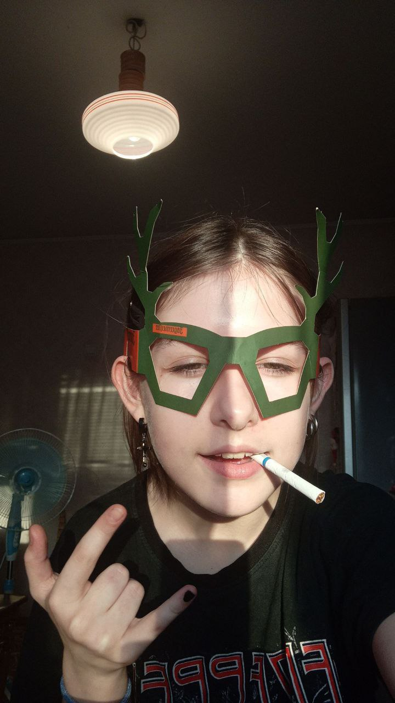

Анастасия Враждебная
Краткая информация:
- Фото: 
- ФИО: Равлик Анастасия Полторашкина
- Псевдоним: Каменских, Настя Враждебная
- Дата рождения: 07.04.2009
- Рост: 1,5м
- Номер телефона: показать
- Адрес электронной почты: (показать)
- Адрес проживания: (показать)
- Род деятельности: Парень Гриши, тик-токерша, подруга Масиро и Сони, "подружка" Ковальчука, самая адекватная из компании подруг Масиро
- Ориентация: терпиловская
Детство
Анастасия Полторашкина родилась 7 апреля 2009 года в городе Винница, Украина. Маленькая Настя была хорошим и послушным ребёнком, который ничем не отличался от обычных детей. В школе она учиться на отлично, хорошо ладит с одноклассниками и вообще живёт в своё удовольствие… Но будь это правдой, она бы никогда не попала в Верстальщики Говна. Ещё когда Полторашкиной было всего пару годиков, её папа дал дёру, ведь чувствовал, что скоро что-то случиться. Так и произошло. Настя поняла, что она так классно может просирать время впустую, что уже с детства не знала, что такое заниматься чем-то полезным.
Школьные годы
Войдя в школу, Полторашкина сразу же увидела и познакомилась с теми, кто в итоге приведёт ее к максимальному упадку в плане интеллекта и собственных достижений – Елизавета Уродина и Соня стали её ЛП, которые убили весь потенциал и какое-либо стремление к успеху. Немного позже, у Лизы появился парень и Настя «случайно» познакомилась с друзьями этого самого парня. С одним из них она решила встретиться, а точнее с Григорием. И когда настало время идти на встречу, «главный злодей, антагонист, конченый жирный урод, негодяй и вонючка, топ 1 Genshin Impact» - Никита Захарчук, отменил прогулку, притворившись её парнем. Признавшись в содеянном, она поняла, что у Гриши по-настоящему классные друзья. В тот день они так и не погуляли, ведь у Насти испортилось настроение. Но, спустя какое-то время, она лучше познакомилась с Никитой, Ильёй, Гришей и всеми остальными участниками Верстальщиков Говна.
Настоящее время
У Насти появилось гораздо больше друзей и общения, благодаря Верстальщикам Говна. Также она 3 раза признавалась Грише, и с третьего раза, Маркарян наконец-то понял и принял предложение стать её девушкой. Но на данный момент такое ощущение, что она девушка Захарчука и Ковальчука. Благодаря тому, что одна из её ЛП уехала в Литву, Полторашковка перестала так сильно тупеть. Спешим сообщить, что в данный момент у Насти всё хорошо: Верстальщики Говна всеми силами помогают ей выбраться из ямы так называемой «подруги»., ведь там не подруги, а две неудачницы без амбиций. Благодаря нам, она безуспешно борется с никотиновой зависимостью, а также встала на путь изучения психологии через тик-токи.
Итог: : если вас бросил папа, а сами вы дружите с неудачниками – вступайте в Верстальщики Говна, мы вам обязательно поможем.
Итог: : если вас бросил папа, а сами вы дружите с неудачниками – вступайте в Верстальщики Говна, мы вам обязательно поможем.